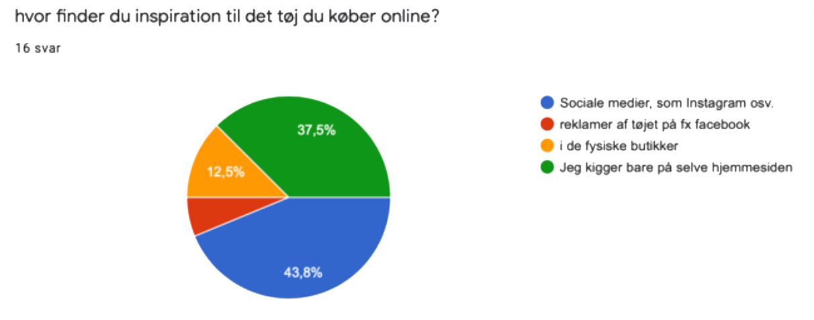

Tilbage til portfolio
Charitee
Tema 3 - Grundlæggende UX
Om projektet & prototypen
I tema 3 - Grundlæggende UX fik vi til opgave at producere digitalt indhold, som understøtter og forbedre brugeroplevelsen i en digital løsning. I opgaven skulle vi som multimediedesigner i værdikæden tage hensyn til både afsender og modtager. Dette har jeg bla. gjordt gennem brugen af copy- og microcopywriting i samspil med UI konventioner, som har betydning for brugerens oplevelse af produktet. Dette er altså med til at fastlægge multimediedesignerens rolle som UX-designer på tværs af design-diciplinerne i temaet.
Processen
Jeg startede med at researche, med henblik på at planlægge og eksekvere en problemstilling, her benyttede jeg flere forskellige research samt testmetoder for at tilegne mig viden indenfor området, samt en indsigt i brugernes adfærd.
Herunder benyttede jeg bla. desk-research til at skabe mig et overblik over problemstillingen. Gennem survey (via. google forms), interviews og tænke-højt-test samt observations-ressearch, skaffede jeg mig viden om brugerens adfærd og erfaringer med produktets usability, samt hvilke områder jeg skulle have fokus på i min prototype, hvilket var med til at forbedre brugeroplevelsen.
Ide og analyse
Min overordnede ide var at fremstille en webshop, som sælger basic t-shirts lavet af stærke, holdbare og bæredygtige materialer. Derudover var det vigtigt for mig at shoppen skulle have et budskab, som jeg gennem copy og microcopywriting kunne nå ud til brugeren med. Heraf kom jeg på ideen om at t-shirtsene skulle laves af Lyocell som er produceret FSC-sertificeret eucalyptustræer, hvor fremstillinen består i et lukket systemloop, hvilket vil sige at 99% af affaldsstofferne bliver genbrugt. Alt denne viden tilegnede jeg mig gennem desk research.

Målgruppen er unge mennesker, da det er den nye generation der begynder at tænke bæredygtighed, og miljø ind i deres hverdag. Gennem mine surveys fandt jeg bla. også ud af at denne generation handler mest poå nettet, samt får inspiration gennem de sociale medier, hvilket også har gjordt at jeg har valgt at implementere en SoMe-sektion, på siden - så brugerne kan blive inspireret til hvordan de kan style deres Charitee.
Styletile
Selve stilen på websitet har jeg valgt at køre meget neutral og naturlig, hvor de grålige farver symbolisere koalaenbjørnen, mens den grønne farve der skiller sig ud symbolisere eukalyptusbladene som t-shirtsene er produceret af. Ikonerne er enkelte, og er samtidig med til at skabe en betydning for brugeroplevelsen, i det de skaber et visuelt look til købsoplevelsen. Fontene jeg har benyttet er i kursiv, for at give et enkelt og ekstravagant look.
En ting som brugerne får igen, når de har handlet hos Charitee, er tanken om at de har gjort en forskel, dette sker i det, der bliver plantet et nyt eucalyptustræ, hver gang der købes en t-shirt, for derved at hjælpe koalaerne til ikke at blive en truet dyreart. Gennem min research og mine ideer om at brugeren ikke bare skal købe en t-shirt, men også gøre en forskel, fandt jeg på navnet "Charitee, samt logoet som forstiller en koalabjørn.

Til toppen